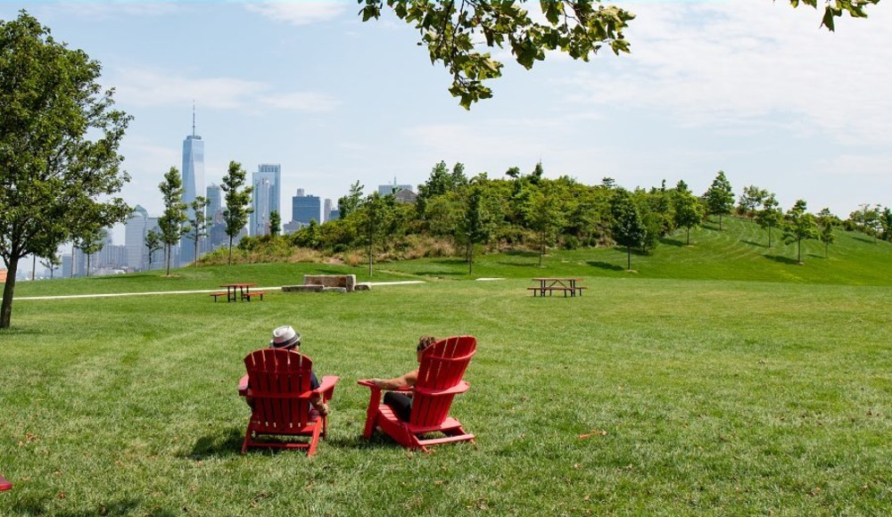
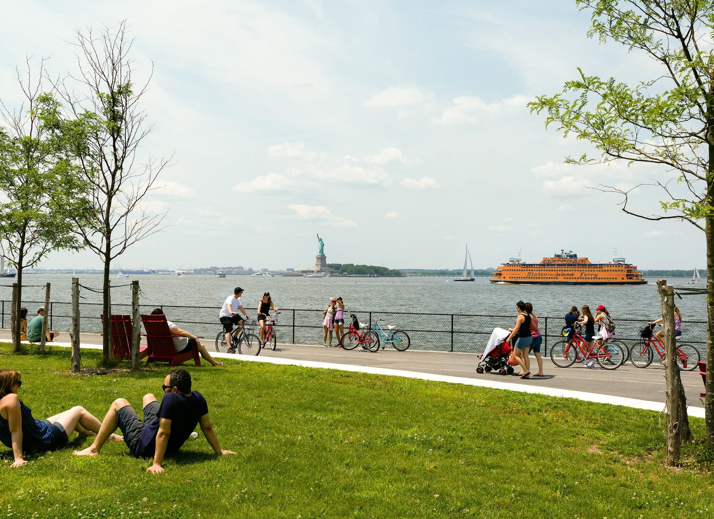
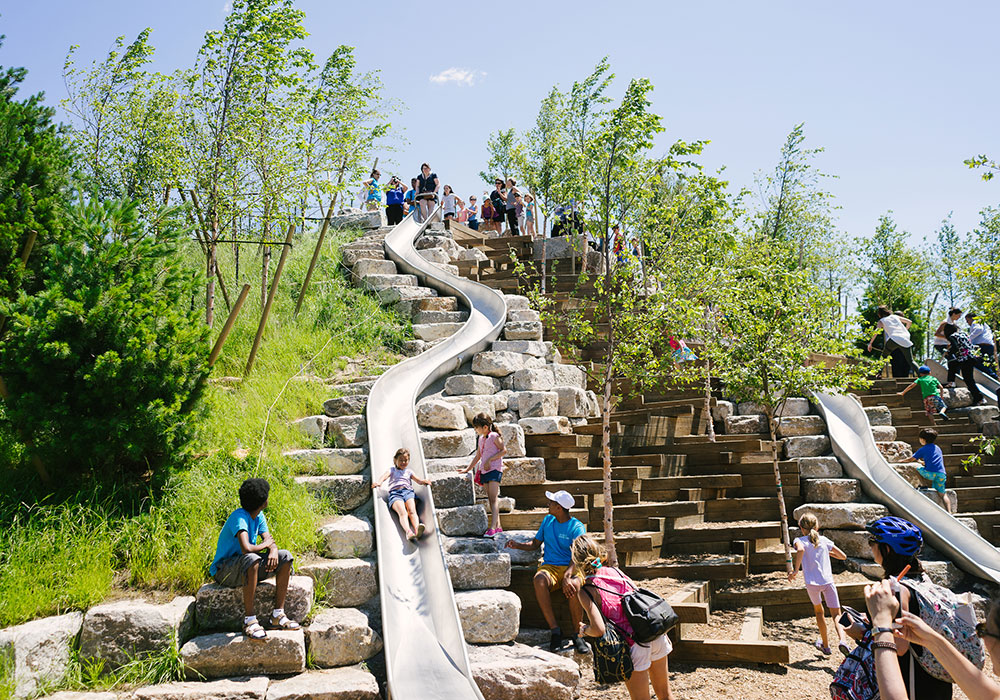

1524. THE LENAPE.
The Native Americans of the Manhattan region, the Lenape, referred to what is now known as Governors Island as Paggank (“Nut Island”) after its plentiful hickory, oak, and chestnut trees. The Island’s location made a perfect fishing camp for local tribes, who used the Island seasonally.1624. EARLY DUTCH COLONIES.
The Dutch West India Company first arrived to New Amsterdam and opted to set up camp on the small, 70-acre Island rather than brave the wilderness that lay across the water on the island that would later be known as Manhattan. Adopting the Native American name, the Dutch settlers called the Island “Noten Eylandt.” They constructed a fort and sawmill here. Many resettled on Manhattan Island the following year.1637. PURCHASE OF NOTEN EYLANDT.
In June 1637, Wouter Van Twiller, the director general for the Dutch West India Company, reportedly purchased the Island from the Lenape for “two ax heads, a string of beads, and a handful of nails." Though he was a representative of the Dutch West India Company, with a charter from the Dutch government, Van Twiller purchased the Island and several others in the Harbor for private use and real estate speculation. The Dutch government confiscated the Island a year later.1664. THE BRITISH COME TO THE ISLAND.
In 1664, the English captured New Amsterdam, renamed it New York, and took Nutten Island (the British mispronunciation of the Dutch name). The city and the Island switched hands between the British and the Dutch over the next decade until the British regained exclusive control of the Island for “his majesties fort and garrison."1699. BRITISH GOVERNOR'S RESIDENCE.
The Island was renamed “Governors Island”, and reserved for the “benefit and accommodation of His Majesty’s Governors.”1750. BECOMING PART OF NEW YORK.
Governors Island was made part of the British territory of New York County under the Montgomerie Charter. The Charter was a typical method of colonial governance that expanded the city’s powers under British rule. The Charter gave the city some judicial powers and control over the establishment of ferries, docks and construction of public buildings.1776. THE BEGINNING OF THE AMERICAN REVOLUTION.
On June 7, 1775, just two months after the first major dissent in the colonies, the British were unable to continue occupying New York. British forces withdrew to Canada to replenish supplies and forces before attempting to retake the city, including Governors Island.1776. BATTLE AGAINST THE BRITISH.
After the British withdrew from the Island, continental troops fortified the Island for fear of advances by the British Royal Navy. At the Battle of Brooklyn, the British Army overpowered General George Washington and his men, and American forces retreated from Long Island and Governors Island. The city and the Island were occupied by the British and used as their North American military headquarters for the rest of the American Revolution.1783. BRITISH WITHDRAWAL.
At the end of the Revolutionary War, British troops withdrew from the city on November 25. This date would be celebrated as "Evacuation Day," a city holiday for the next century. The British Royal Navy departed the Island on December 4th, and the Royal Navy surrendered to the Continental Army.1794 - 1800. FORTIFYING A NEW REPUBLIC.
After the American Revolution, the state of New York inherited all lands owned by the British, including Governors Island. In 1794, with the country in need of a system of coastal defenses, the fledgling government began to fortify the Harbor, including construction of a fort, later to be named Fort Jay, on high ground in the center of the Island. In 1800, New York transferred the Island to the U.S. government for military use.1806 - 1812. FORT JAY, CASTLE WILLIAMS AND SOUTH BATTERY.
Between 1806 and 1809, the U.S. Army reconstructed Fort Jay and renamed it Fort Columbus (in 1904, the name would be changed back to Fort Jay). Castle Williams, the second of three historical forts, was built on a rocky outcropping facing the harbor. In 1812, the South Battery, the third fort on the Island, was constructed. During the War of 1812, artillery and infantry troops were concentrated on Governors Island. The recently built fortifications deterred a British invasion, sparing New York the fiery fate that befell Washington, D.C.1861 - 1865. CIVIL WAR.
Governors Island continued to serve an important military function during the American Civil War, though it was no longer used primarily for physical defense of the Harbor. In the early years of the war, the Island was called into service as a recruitment depot and as a barracks for newly recruited soldiers. CONFEDERATE PRISONERS OF WAR. As the Civil War wore on, Fort Jay and Castle Williams were transformed into prisoner-of-war holding facilities for Confederate prisoners. Officers were imprisoned at Fort Jay, where lodgings were snug but comfortable, and they were allowed to stroll most of the Island at their leisure. Enlisted prisoners did not fare as well; the number of imprisoned rose to nearly 1,000 men, creating cramped, filthy conditions.1878. ARMY HEADQUARTERS.
In the 1870s, the Army moved both offices and officers to the Island, building six new generals’ houses, now known as Colonels Row, and enclosing Nolan Park. By 1878, Governors Island had evolved from a small military outpost to an army headquarters and garrison. The Island offered a quiet neighborhood not far from the hustle and bustle of the City for officers, enlisted men and their families.1912. ISLAND EXPANSION.
Physically, the Island changed greatly during the early 20th century. Using rocks and dirt from the excavation of the Lexington Avenue Subway and dredge from New York Harbor, the Army Corps of Engineers supervised the deposit of 4,787,000 cubic yards of fill on the south side of Governors Island. This fill was used to add 103 acres of flat, treeless land, increasing the size of the Island to 172 acres by 1912.1917. WORLD WAR I.
In the first act of the war by U.S. armed services, the 22nd Infantry Regiment stationed on Governors Island seized all German-owned cruise ships and ship terminals in the Hudson River in Manhattan and Hoboken. Within weeks, the ships would be used to transport most of the two million American soldiers to France to fight in the war. The 22nd Infantry stayed on the Island for the duration of the war, protecting the supply depot and vital infrastructure between New York City and Washington, D.C.1922. CONNECTION TO THE CITY.
With the arrival of the 16th Infantry Regiment on Governors Island and Fort Jay in 1922, a strong connection was forged between the U.S. Army and the citizens of New York City. The regimental band marched in the city parades and had an Army camp at the 1939 World's Fair, while the public was invited to watch polo matches and mock battles staged on the Island.1941. WORLD WAR II.
Between the two world wars, the Island served as an important headquarters for Army ground and air forces. By World War II, the U.S. First Army used it as its headquarters. Originally established in Europe in 1919, the First Army initiated their planning efforts for the D-Day invasion on Governors Island. The D-Day invasion led to the American landing in Normandy, and the liberation of Europe.1965. THE ARMY DEPARTS.
In the 1960s, U.S. Army continued to construct barracks and apartment buildings on the southern portion of the Island. The Island remained an army post and quiet neighborhood for military families until November 1964. In response to changing military technology and budget constraints, the U.S. Department of Defense announced the pending closure of Governors Island and the Brooklyn Navy Yard.1966. COAST GUARD INSTALLATION.
In 1966, the Island was transferred to the United States Coast Guard. The Island became the Coast Guard's largest installation, with a self-contained residential community of approximately 3,000 and a commuting population of another 1500. Under the Coast Guard, the Island was the home of the Atlantic Area Command, the Maintenance and Logistics Command, and the Captain of the Port of New York.1986-1993. A BACKDROP FOR HISTORY.
Over the years, Governors Island served as the backdrop for a number of historic events. In 1986, the Island was the setting for the relighting of the newly refurbished Statue of Liberty by President Ronald Reagan. In 1988, President Reagan hosted a final meeting with Mikhail Gorbachev on Governors Island, and in 1993, the United Nations sponsored talks on the Island to help restore democratic rule in Haiti.1995. ENDING THE ISLAND'S MILITARY ROLE.
As a cost cutting measure, the Coast Guard closed its facilities on Governors Island. All personnel were relocated by September 1996. It was the end of an era for the thousands of Coast Guard and Army families who had called the Island home.1996. BECOMING A NEW YORK CITY HISTORIC DISTRICT.
The New York City Landmarks Preservation Commission designated the 92 acres north of Division Road as a local Historic District. The same 92 acres had been designated as a National Historic District a decade earlier in 1985.2001. A NEW NATIONAL MONUMENT.
In January 2001, President Bill Clinton designated 22 acres of the Island, including Fort Jay and Castle Williams and the area that surrounds them, as the Governors Island National Monument, to be owned and managed by the National Park Service.2003. RETURN TO THE PEOPLE OF NEW YORK.
The federal government sold the remaining 150 acres of Governors Island to the people of the City and State of New York for a nominal cost. Provisions in the deed ensured that much of the Island would be used for public benefit. At the time of transfer, the Governors Island Preservation and Education Corporation (GIPEC), was formed. It was the predecessor to the Trust for Governors Island.2003. THE FIRST VISITORS.
National Park Service rangers gave the first guided tours of the Island to approximately 4,000 visitors between June and October.2006. OPEN TO THE PUBLIC.
8,000 visitors came to Governors Island during 2005, the first year the Island was open to the public.2007. STARTING WITH PARKS AND PUBLIC SPACE.
The decision was made to start the redevelopment of Governors Island with a design competition for new parks and public open space. The acclaimed landscape architecture firm West 8 was selected to design the Governors Island Park and Public Space Master Plan, which marked an important first step in the transformation of Governors Island. That same year, GIPEC demolished a derelict Super 8 Motel on the Parade Ground, opening up more green space for the public to enjoy.2009. PICNIC POINT AND FERRIES FROM BROOKLYN.
Ferries began running from Brooklyn for the first time. Picnic Point opened on the southern tip of the Island and the 2.2 mile promenade was opened to pedestrians and cyclists. With more to do and see than ever, the Island welcomed more than 275,000 people in 2009.2010. FIRST YEAR ROUND TENANTS.
The Urban Assembly New York Harbor School and the Lower Manhattan Cultural Council Art Center became the first year-round tenants on Governors Island. The Harbor School, a New York City public high school, restored Building 555 on the Island’s western shore to provide a college-preparatory education built on New York City’s maritime experience. The Lower Manhattan Cultural Council restored a large portion of Building 110 near Soissons Landing as a year-round shared, multidisciplinary space providing a retreat style artist residency and public exhibitions. A PUBLIC SPACE MASTER PLAN The West 8-designed Governors Island Park and Public Space Master Plan was released in 2010. The plan encompasses 85 acres of public open space on the Island, including new visitor amenities and improvements to the landscapes of the Historic District, a new park on the Island’s southern end, and a new 2.2 mile promenade around the perimeter. THE CITY TAKES RESPONSIBILITY FOR GOVERNORS ISLAND In April 2010, Mayor Bloomberg and Governor Paterson reached an agreement on the future of Governors Island. The City of New York, now responsible for Governors Island, created the Trust for Governors Island and charged it with the operations, planning and redevelopment of the Island.2011. CASTLE WILLIAMS OPENS TO THE PUBLIC.
After an extensive rehabilitation project in 2011, the National Park Service opened Castle Williams to the general public for the first time in the fort's 200-year history.2012. PARK GROUND BREAKING.
The Trust broke ground on the first phase of construction for the Island’s new park and public spaces, along with an ambitious capital program to bring the Island’s infrastructure into the 21st century.2013. IMPLOSION!
In the early morning of June 9, 2013, Building 877 was imploded with 200 lbs of dynamite. The derelict 11-story apartment building on the southern end of Governors Island, where Outlook Hill and the ballfields now stand, had been vacant since 1996. Demolition debris was later used in the construction of The Hills.2014. NEW PARK.
The first 30 acres of new park opened to the public in May 2014. On land that was once flat and featureless, visitors were now able to enjoy a meal in Liggett Terrace, play or nap in Hammock Grove, or play sports on the Play Lawn. Potable water was restored as well, which was another major milestone readying the Island for its future.2015. THE BUSIEST SEASON YET.
With almost half a million visitors, the 2015 season on Governors Island was one of the busiest yet. Almost 70 arts and cultural organizations created programming on Governors Island as part of OpenHouseGI, the Trust’s program which provides free space for artists, cultural and recreational organizations. OpenHouseGI offers 150,000 square feet of indoor space in former officers’ houses and 25 acres of outdoor space free of charge to any organization that creates programming that is free and open to the public during Governors Island’s public season. The Trust for Governors Island does not fund, select, or curate projects.2016. THE HILLS ARE ALIVE.
The Hills, the culminating feature of the new park and public spaces, opened to the public nearly one year ahead of schedule.2017. EXPANDING THE PUBLIC SEASON.
In 2017, Governors Island remained open to the public through October for the first time, allowing visitors to experience its scenic settings in a new season.2019. GOVERNORS 1 LAUNCHES.
The Trust for Governors Island commissioned Rhode Island-based Blount Boats to construct a brand-new vessel, the Governors 1, to increase service between the Island and Manhattan during the public season. The 400-passenger new ferry launched in summer 2019.2019. LMCC'S ARTS CENTER OPENS.
Following its use as a venue for artist studios, LMCC and the Trust partnered on a renovation of Building 110 into the first permanent home for the arts on Governors Island. LMCC’s new Arts Center includes galleries for exhibitions and installations, space for public programs, year-round studio areas for up to 40 artists, and a café.2020. A CENTER FOR CLIMATE SOLUTIONS.
In September 2020, Mayor Bill de Blasio and the Trust for Governors Island announced plans to develop a Center for Climate Solutions as part of the Mayor’s Recovery Agenda. The Center would bring together a cross-disciplinary community of researchers, educators, advocates, innovators and policymakers to create, test and implement the solutions our urban environments need today and in the decades to come. With its millions of visitors and unique waterfront and ecological resources, Governors Island can serve as an inspiring example of sustainable and resilient urban development and an unparalleled destination for broad public participation and engagement.
Governors Island



Pictures of Governors Island